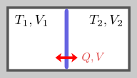

容器を仕切って2つの部屋に分ける。仕切りは、熱を通し、かつ、自由に動けるとする。任意の始状態のもとで、放置したときの平衡状態を求めたい。前章との違いは、仕切りが自由に動けるという点だけである。
状態方程式が知りたい

前章と同様に、仕切りによって区切られた2つの部屋を考える。ただし仕切りは、熱を通し、かつ、自由に動けるとする。右図の
↔𝑄,𝑉
という表記において、
𝑄
は仕切りが透熱壁であることを表し、
𝑉
は仕切りの位置が自由に動くことを表す。
終状態での各部屋の 𝑇,𝑉 が知りたい
初期状態において、両方の部屋の温度・体積がそれぞれ
𝑇1,𝑉1
および
𝑇2,𝑉2
であったとする。この時、最終的な平衡状態における値
𝑇′1,𝑉′1
と
𝑇′2,𝑉′2
には再現性があることが知られている。この値を求める方法が知りたい。
必要な条件はすぐ見つかる
未知数は、
𝑇′1,𝑉′1
と
𝑇′2,𝑉′2
の4つなので、4つの条件が必要である。それは容易にわかる。即ち、前章でも登場した「等温条件」「エネルギー保存則」に加えて、「等圧条件」と「体積保存則」を考えればよい：
等温：𝑇′1=𝑇′2等圧：𝑃′1=𝑃′2エネルギー保存：𝑈1+𝑈2=𝑈′1+𝑈′2体積保存：𝑉1+𝑉2=𝑉′1+𝑉′2⎫{
{
{⎬{
{
{⎭(1)
新しく出てきた量は圧力
𝑃
である。仕切りが静止している時、両側からの力が釣り合うので、圧力が等しくなる。
𝑈𝑇𝑉,𝑃𝑇𝑉 を測定から求めたい
求めたいのは各部屋の温度
𝑇
と体積
𝑉
なので、式(1)も
𝑇,𝑉
の関係式にすべきである。そのためには、エネルギー
𝑈
と圧力
𝑃
を
𝑇,𝑉
の関数として測定から求めておく必要がある：
𝑈𝑇𝑉,𝑃𝑇𝑉(2)
エネルギー方程式、状態方程式
𝑈𝑇𝑉
は前章でも出てきたエネルギー方程式である（
𝑉
への依存性が加わっている）。
𝑃𝑇𝑉
のことを状態方程式という。この章では、まず、測定によって式(2)の関数形を決める方法について述べる。その後、理想気体の場合について、具体的に関数形を与えて式(1)の解を与える：2.1エネルギー関数と状態方程式の測定2.2理想気体の場合の解2.3参考 平衡状態はエネルギーと運動方程式で区別される
2.1エネルギー関数と状態方程式の測定
エネルギー関数
𝑈𝑇𝑉
と状態方程式
𝑃𝑇𝑉
は、実験から決める。この節ではその方法について述べる。
2.1.1エネルギー関数 𝑈𝑇𝑉 の測定
エネルギー関数
𝑈𝑇𝑉
を特定するには、前章の場合と同様に、微小な変化を測定すればよい。
𝑈˙𝑇𝑉,𝑈𝑇˙𝑉 を測定すれば微分方程式が確定する
具体的には、「微小な温度変化
𝛿𝑇
」および「微小な体積変化
𝛿𝑉
」を生じさせるのに必要なエネルギー
𝛿𝑈
：
𝛿𝑈𝑇𝑉≐𝑈˙𝑇𝑉𝛿𝑇+𝑈𝑇˙𝑉𝛿𝑉(3)
を考える。これを様々な
𝑇,𝑉
で測定して、右辺の微分係数
𝑈˙𝑇𝑉,𝑈𝑇˙𝑉
を求める。その後、この微分方程式を積分すれば
𝑈𝑇𝑉
が得られる（前章と同様、定数を足す自由度が残る。）。第4章の予告なお、第4章で導くが、実は
𝑈𝑇˙𝑉=𝑇𝑃˙𝑇𝑉−𝑃𝑇𝑉˙𝑇
という極めて非自明な関係式が一般に成り立つ（熱力学的状態方程式という）。この式の右辺は状態方程式
𝑃𝑇𝑉
が分かれば確定するので、左辺の
𝑈𝑇˙𝑉
は、状態方程式だけから求まるのである。要するに、エネルギー関数
𝑈𝑇𝑉
は、熱容量
𝑈˙𝑇𝑉
と状態方程式
𝑃𝑇𝑉
から決まることになる。
熱容量 𝑈˙𝑇𝑉 の測定
まず
𝑈˙𝑇𝑉
であるが、これは前章で述べた熱容量である（体積を固定しているので等積熱容量ともいう）。測定方法も同様であり、体積
𝑉
を固定した状態でエネルギー
𝛿𝑈
を与えて、温度変化
𝛿𝑇
を測定すればよい。すると、式(3)は
𝛿𝑈≐𝑈˙𝑇𝑉𝛿𝑇
となって
𝑈˙𝑇𝑉
が決まる。
𝑈𝑇˙𝑉 の測定
もう一方の
𝑈𝑇˙𝑉
の値は、定義上、始状態と終状態の温度を変えないように体積変化
𝛿𝑉
を起こすのに必要なエネルギー
𝛿𝑈
を測定すればよい。具体的には、まず断熱容器の体積を
𝛿𝑉
だけ大きくする。すると温度が下がるので、エネルギーを加えて元の温度に戻せばよい。加えたエネルギーの総量
𝛿𝐸
を用いて
𝑈𝑇˙𝑉
が決まる。別の測定方法しかし、温度を変えないように調節するのは大変である。別の方法として、自由膨張が使える。即ち、仕切られた容器の一方にだけ気体を入れ、他方は真空にしておく。この状態で仕切りを取ると、気体は
𝛿𝑉
（微小とする）だけ膨張するが、エネルギー変化は
𝛿𝑈=0
なので、式(3)は
0≐𝑈˙𝑇𝑉𝛿𝑇+𝑈𝑇˙𝑉𝛿𝑉
となる。よって、この時の温度変化
𝛿𝑇
を測定すれば、（
𝑈˙𝑇𝑉
を予め求めておくことで）
𝑈𝑇˙𝑉
が決まる。
2.1.2状態方程式 𝑃𝑇𝑉 の測定
状態方程式
𝑃𝑇𝑉
については、圧力
𝑃
が直接測れる量であるため、様々な
𝑇,𝑉
について実際に測定すれば関数形が決まる。圧力とはなお、圧力
𝑃[kg⋅m−2]
とは、容器壁の微小面積
𝛿𝑆
が受ける力
𝛿𝒇≐𝑃𝛿𝑆
の比例係数のことである（直感的には、単位面積あたりに働く力）。また、上の議論では、重力などの外力の影響は無視できるとしている（気体の温度が十分高い場合は相対的に無視できる）。無視できない場合、圧力は場所に依存する。
2.2理想気体の場合の解
この節では、理想気体の場合について、冒頭の問題の解を与える。
2.2.1理想気体のエネルギー関数：式(4)
まず、エネルギー関数
𝑈𝑇𝑉
を考える。
理想気体の 𝑈˙𝑇𝑉 と 𝑈𝑇˙𝑉
理想気体に近い気体の場合、実験的に、式(3)の第1項の熱容量
𝑈˙𝑇𝑉
は、定数とみなせることが分かっている（この定数を
𝐶
とおく）：
𝑈˙𝑇𝑉=𝐶=const.
残りの同式第2項の
𝑈𝑇˙𝑉
については、ゼロで近似できることが分かっている（ジュールの法則）：
𝑈𝑇˙𝑉=0
微分方程式(3)とその解
式(3)にこれらを代入すると、解くべき微分方程式は
𝛿𝑈𝑇𝑉≐𝐶𝛿𝑇
となり、これは前章のものと同じである。よって、理想気体のエネルギー関数
𝑈𝑇𝑉
も同じ
𝑈𝑇𝑉=𝐶𝑇(4)
となる。
2.2.2理想気体の状態方程式：式(5)
次は、理想気体の状態方程式
𝑃𝑇𝑉
である。
理想気体の状態方程式(5)
結論から言うと、以下のようになることが実験的に知られている：
𝑃𝑇𝑉=𝐾𝑇𝑉(5)
𝐾
は定数である（理想気体の量には依存する）。
式(5)は直感的にももっともらしい
式(5)を納得しておこう。式(5)が持つ、体積
𝑉
と温度
𝑇
に対する依存性は、以下のように考えればもっともらしい。
体積
𝑉
に対する依存性
まず、体積
𝑉
に対する依存性を見ると、圧力
𝑃
は
𝑉
に反比例している。これは気体を構成する分子の運動を想像と分かりやすい。例えば温度を変えずに（＝理想気体を考えているので「エネルギーを変えずに」）体積を
2
倍にすると、壁に衝突する分子の数が
1/2
になるので、確かに圧力も
1/2
になりそうである。
温度
𝑇
に対する依存性
温度
𝑇
に対する依存性については、前章で述べた通り、圧力一定の下で
𝑇
と
𝑉
が比例することから、式(5)の形になることが言える。
2.2.3理想気体の場合の解
以上で理想気体のエネルギー関数(4)と状態方程式(5)がそろったので、冒頭の問題を解くことができる。その結果を以下の【1.2-注1】に示す。
【2.2-注1】理想気体の仕切り付き熱接触
自由に動く透熱仕切りによって容器を2分割する。初期値として、それぞれの部屋の温度
𝑇1,𝑇2
と体積
𝑉1,𝑉2
を与える。その後しばらく放置して平衡状態になった時の温度
𝑇′1,𝑇′2
と体積
𝑉′1,𝑉′2
が知りたい。
理想気体の場合、平衡状態は以下のようになる：
𝑇′1=𝑇′2=𝐶1𝑇1+𝐶2𝑇2𝐶1+𝐶2𝑉′1=𝐾1𝐾1+𝐾2(𝑉1+𝑉2)𝑉′2=𝐾2𝐾1+𝐾2(𝑉1+𝑉2)
𝐶𝑖,𝐾𝑖
はそれぞれ、エネルギー関数(4)と状態方程式(5)の係数である。
導出
未知数が4つなので4つの方程式が必要だが、それは既に見たように式(1)である。これに、理想気体の場合のエネルギー関数(4)と状態方程式(5)を代入すると
等温：𝑇′1=𝑇′2等圧：𝐾1𝑇′1𝑉′1=𝐾2𝑇′2𝑉′2エネルギー保存：𝐶1𝑇1+𝐶2𝑇2=𝐶1𝑇′1+𝐶2𝑇′2体積保存：𝑉1+𝑉2=𝑉′1+𝑉′2⎫{
{
{
{⎬{
{
{
{⎭
となる。第1式と第3式からすぐに
𝑇′1,𝑇′2
が求まる。これと残りの式から
𝐾′1,𝐾′2
も求まる。
◼
温度部分の結果が前章の場合（固定した仕切り）と同じになるのは、理想気体の場合、エネルギー
𝐸
が体積
𝑉
に依存しないことを反映している。
2.3参考 平衡状態はエネルギーと運動方程式で区別される
これまでは、各部屋の平衡状態は温度
𝑇
と体積
𝑉
で決まることを前提としてきた。
平衡状態を区別するラベルは 𝑇,𝑉 以外でもよい
一方で、それ以外の変数であるエネルギーと圧力については、
𝑇,𝑉
の関数とみなしてきた：
𝑈𝑇𝑉,𝑃𝑇𝑉
。しかし、
𝑇,𝑉
の組み合わせを取ったのは今考えている実験の都合である。平衡状態を特定するだけであれば、これまで出てきた
𝑇,𝑉,𝑈,𝑃(6)
の中から2つ取ってくれば良さそうである。どの2つを取るのが自然だろうか。
𝑈,𝑉 のペアが自然であることを示そう
ここでは、容器内の分子の運動に着目して、「平衡状態を区別するパラメータはエネルギーと運動方程式（に含まれているパラメータ）である」という原理について述べる。式(6)で言えば、平衡状態を区別するパラメータとして
𝑈,𝑉
を考えるのが自然ということである。残りの
𝑇,𝑃
は、原理的には、運動方程式を解いて得られた分子の運動から計算される量である。
2.3.1エネルギーを決めると平衡状態が決まる
容器中の各々の分子（または原子）の運動方程式に着目する。
𝑖
番目の粒子の運動方程式は、以下のようになるだろう：
𝑚𝑖¨𝒙𝑖=𝒇𝑖𝑗+𝒇wall+𝒇ext𝒇𝑖𝑗≡(分子𝑖が分子𝑗から受ける力)𝒇wall≡(容器の壁から受ける力)𝒇ext≡(重力などの外力)(7)
分子運動論このように分子の運動から熱力学を理解しようとする戦略のことを、分子運動論という。ただし今の場合、厳密な議論をするわけではないので雰囲気だけ掴んでおけば良い。
初期値による平衡状態の違いは 𝐸 で区別できそう
力学編で見たように、運動方程式(7)が与えられれば、後は初期値
𝒙𝑖,˙𝒙𝑖
を決めることで、その後の分子運動が決まる。よって、初期値の取り方によって、どのような平衡状態に至るかが決まる。初期値の取り方は無限ともいえる自由度を持つわけだが、この節の冒頭でも述べたように、今考えている系の平衡状態は2つのパラメータしか持たない。従って、初期値の自由度は、ほとんど平衡状態には効いてこない。唯一効きそうなのが、一般的な保存量であるエネルギー
𝐸
である。熱力学的な系では非常に多くの分子が相互作用して、乱雑な状態になろうとする。その結果、初期値が持っていた個性はマクロには認識できなくなり、平衡状態に至る。保存量であれば、乱雑さとは無関係なので、平衡状態に固有の量として自然だ、ということである。実際、これまで見てきたように、エネルギーは温度というマクロな量の関数なので、平衡状態を区別するパラメータ（の1つ）になっている。
それを認めよう
そこで、これを仮設として認めることにしよう。すなわち、ある運動方程式(7)に従う系が平衡状態を持つ時、以下が成り立つ：
エネルギーが同じ状態は、同じ平衡状態に至る(8)
ただし例外もあるただし、特定の状況では、1つのエネルギーが複数の平衡状態を持つことがある。即ち、エネルギーが同じでも、初期値によっては異なる平衡状態に至る。これについては、この節の最後で例を示す。これにより、平衡状態を特徴づける量(6)のうち、エネルギー
𝑈
が特に重要ということになる。なお、仮設(8)は、当然ながら平衡状態を持つ系であることを前提としている。ある系に対し、平衡状態が存在するのか、存在するとしてどの初期状態でどの平衡状態に至るのか、といった問題は、原理的には数学的に回答できるはずだが、非常に難しいだろう。
2.3.2運動方程式の中のパラメータも平衡状態を特徴づける
ここまでは、運動方程式(7)は固定して考えていた。
𝑉 も平衡状態を区別するパラメータ
運動方程式が異なれば当然、平衡状態も異なる。即ち、運動方程式に含まれるパラメータは平衡状態を区別するパラメータとなる。例えば、分子の数・種類、容器の形状、外力など。この節で考えている状況では、変化するのは容器の形状のみであるが、これは式(6)でいうと、体積
𝑉
に対応する。体積
𝑉
の情報は、運動方程式(7)では壁から受ける力
𝒇wall
の形で取り込まれている。容器の内部では力はゼロになり、容器の壁付近では押し返すように力が働く。
𝒇wall=𝟎
となる領域の体積が
𝑉
になる。
𝑈,𝑉 のペアを採用するのが自然
以上により、平衡状態を決めるためのパラメータは、初期値に対応するエネルギー
𝑈
、および、運動方程式パラメータの体積
𝑉
ということになる。平衡状態の自由度は2であることが分かっているので、式(6)の残り量である温度
𝑇
と圧力
𝑃
は、分子の運動から求められるはずである。圧力
𝑃
は、容器の壁の微小面積が各分子から受ける力の和から求まるので、運動方程式(7)の
𝒇wall
から決まる。温度
𝑇
については、理想気体に近い気体容器と熱接触する系を考えれば原理的には可能である（理想気体容器の温度と同じになるように決めればよい）。
2.3.3仮設が破れる例
ここでは仮設(8)が破れる例を挙げる。
内部障壁があると平衡状態が一意に決まらない
仮設(8)が破れるのは、同じエネルギーに対して複数の平衡状態がある場合である。これは、何らかの障壁（内部障壁という）があって平衡状態間の遷移が妨げられている場合である。内部障壁を持つ系では、同じエネルギー
𝐸
を持つ複数の平衡状態を区別するパラメータ（
𝛼
とおく）を追加して、状態方程式
𝑃𝐸𝑉𝛼
や温度関数
𝑇𝐸𝑉𝛼
を測定しておく必要がある。（もちろん、
𝛼
が変化しない実験だけを考えているのであれば気にしなくてよい。）
- もっとも分かりやすいのは、容器が仕切られている場合である（仕切りが内部障壁）。この場合、通常は、各部屋の運動方程式(7)を個別に扱うので問題ない。しかしあえて、容器全体を1つの運動方程式で済ませることもできる。その場合、系全体のエネルギーを決めただけでは、各部屋にどれだけの粒子数・エネルギーを配分するか（初期値に依存する）が決まらないので、平衡状態も一意的には決まらない。
- 仕切りが薄い膜の場合、ちょっとした刺激で仕切りが破れて分子が部屋同士を行き来できるようになる。
- 履歴効果（＝どのように準備したかによって平衡状態が異なる現象）も仮設(8)が破れる典型的な例である。
- 水は1気圧下では
0∘C
で凍るが、ゆっくり静かに冷やしていくと、水のまま氷点下にすることができる（過冷却）。そのため、氷点下であっても氷と水という2種類の平衡状態が存在する。過冷却状態の水に振動を与えると、一瞬で氷に変化する。このように、凝固するには何らかのきっかけが必要であり、それを概念的に表したのが内部障壁という用語である（水が凍るには振動を与えるといった形で内部障壁を越える必要がある）。
- 他にも、「黒鉛」と「ダイアモンド」、「水素・酸素の混合気体」と「それに火花を散らして燃焼反応を起こしたもの」（火花が十分小さければエネルギーの変化は無視できる）、などがある。